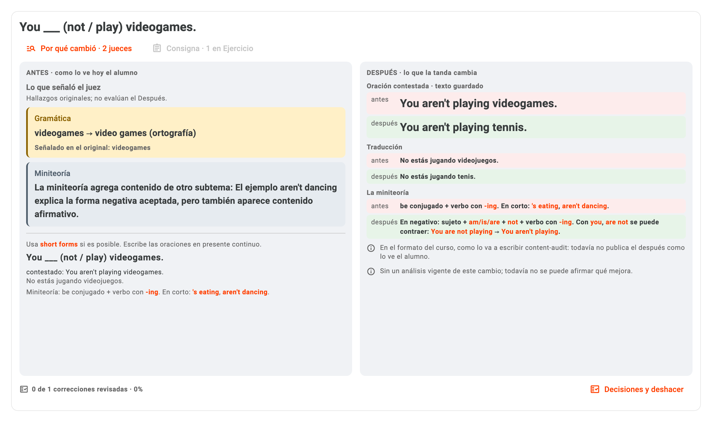

El error del juez,
sin tener que buscarlo.
9 de octubre de 2026 · A1 V11 · UI reabierta
El Antes muestra directamente qué señaló cada juez, con su observación completa y el texto marcado. La explicación de la mesa sigue separada: no es otro veredicto.
La observación ya no queda escondida

Sin abrir un diálogo: nombre del juez, observación en negrita y evidencia marcada cuando existe. Se muestran los motivos vinculados al paso exacto, no hallazgos ajenos.
Ortografía no es lo mismo que cambiar vocabulario
(ortografía)
Por qué cambió conserva la procedencia y evidencia completa. Mostrar un hallazgo original no asegura que el Después lo haya resuelto.
Verificado sin cambiar tus decisiones
Suite integrada: 347 pruebas Flutter aprobadas, una omitida y un fallo previo del guardián; reproducido en master sin este cambio. Análisis estático limpio.
Seguí revisando en la misma Corrección 1
Release reabierta y comprobada en Oraciones negativas. Debug intacta. Texto ampliado y ventana angosta probados; el contador ya no se comprime junto a Deshacer.